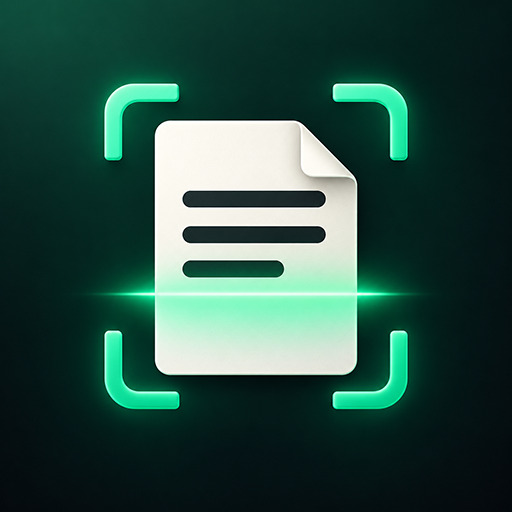
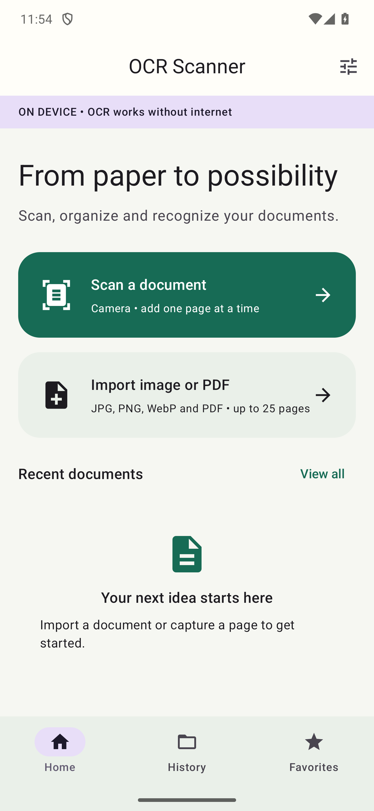
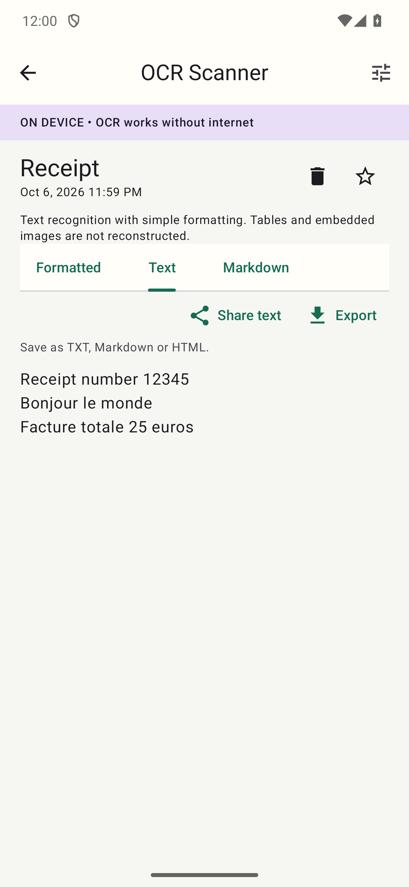

Capture or import
Take a photo using your camera app, or import JPG, PNG, WebP and unencrypted PDF files.

OCR ScannerPDF & TEXTTurn scans, photos and PDFs into text you can use. Capture it, clean it up and keep it with you — right on your Android phone.
On-device OCR. No account. No internet needed.

A receipt, a page of notes, a PDF. Make your documents easier to read, find and share.
Take a photo using your camera app, or import JPG, PNG, WebP and unencrypted PDF files.
Build documents with up to 3 pages for free, or up to 25 with Pro. Add, reorder or remove pages before recognizing the text.
Adjust the crop manually, rotate in 90° steps and try grayscale to prepare your page.
Recognize English, French and Arabic locally. Read the result in Formatted, Text or Markdown view.
Search document names and recognized text in your history. Mark important documents as favorites.
Share text with an app you choose, or save a TXT, Markdown or HTML file using Android’s file picker.

An actual result from the Android app.
Tap Scan a document to use your camera, or Import image or PDF to select a file.
Add pages if you need them. Use Crop and enhance to adjust edges, rotation or grayscale.
Select English / French or Arabic, then tap Recognize document. The work happens on your phone.
Check the result, then tap Share text or Export. Find the saved document later in History.
The on-device edition processes your scans locally. It does not upload your documents to an OCR server.
Read the privacy policyStart with all three OCR languages, editing tools, history and favorites. Upgrade when you need longer documents or more export formats.
Up to 3 pages per document. TXT export, copy and share. English, French and Arabic OCR, crop, rotate, grayscale, search and favorites.
Up to 25 pages per document, plus Markdown and HTML file exports. One-time purchase; no subscription.
Proposed base price: $4.99 USD. Galaxy Store shows your local price and applicable taxes before purchase. Purchase availability begins with the store release.
Use Restore purchases with the same Samsung account after reinstalling. Buying and restoring need internet; document recognition stays on your device.
Purchase and restore help →Yes. Recognition models are included. You can import, recognize, search and use Free features without internet or an app account. Buying or restoring optional Pro requires internet and your Samsung account; confirmed Pro access is cached for offline use.
English and French use the English / French option. Arabic has its own language option. The app interface is available in English, French and Arabic, with right-to-left support for Arabic.
Yes. Import an unencrypted PDF and work with up to 3 pages per document for free, or up to 25 with Pro. You can add, reorder and remove pages before recognition. JPG, PNG and WebP images are also supported.
The app extracts text with simple formatting. It does not reconstruct complex tables or embedded images, and it does not create searchable PDF exports. TXT export is free. Markdown and HTML file exports require Pro.
Use sharp, well-lit images with readable text. Keep the page upright, crop out unnecessary edges, choose the matching language and review the output. Low-quality photos, complex layouts and handwriting can produce errors.
Open the document and use Delete document. This removes its saved pages and results from the app. Files you have already shared or exported must be deleted separately from their destination.
The current signed Galaxy release targets ARM64 Android devices running Android 8.0 or later. Compatibility can vary by device and is determined by the app’s store listing.
The Galaxy Store release is being prepared. The store download link will be added here when the listing is available.